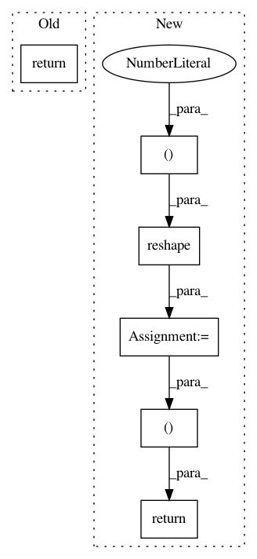

4e6f3c26ada09786a1fa97ee174668af588cdd76,gluonnlp/model/sampled_block.py,_SampledLogitsHelper,hybrid_forward,#_SampledLogitsHelper#Any#Any#Any#Any#Any#Any#,49
Before Change
// logits and new_labels
// (batch_size, 1+num_sampled)
logits = F.concat(logits_true, logits_sampled, dim=1)
return logits, F.zeros_like(label)
def __repr__(self):
s = "{name}({mapping})"
mapping = "{0} -> {1}, with {2} samples".format(self._in_unit, self._num_classes,
After Change
if self._sparse_label:
new_label = F.zeros_like(label)
else:
label_vec = F.reshape(label, (-1, 1))
new_label_sampled = F.zeros_like(pred_sampled)
new_label_true = F.ones_like(label_vec)
new_label = F.Concat(new_label_sampled, new_label_true, dim=1)
return pred, new_label
def __repr__(self):
s = "{name}({mapping})"
mapping = "{0} -> {1}, with {2} samples".format(self._in_unit, self._num_classes,
In pattern: SUPERPATTERN
Frequency: 3
Non-data size: 6
Instances
Project Name: dmlc/gluon-nlp
Commit Name: 4e6f3c26ada09786a1fa97ee174668af588cdd76
Time: 2018-08-16
Author: linhaibin.eric@gmail.com
File Name: gluonnlp/model/sampled_block.py
Class Name: _SampledLogitsHelper
Method Name: hybrid_forward
Project Name: keras-team/keras
Commit Name: 243d4737d1caaf7d586abc69addef16a08276231
Time: 2015-07-03
Author: francois.chollet@gmail.com
File Name: keras/layers/convolutional.py
Class Name: Convolution1D
Method Name: get_output
Project Name: keras-team/keras
Commit Name: 243d4737d1caaf7d586abc69addef16a08276231
Time: 2015-07-03
Author: francois.chollet@gmail.com
File Name: keras/layers/convolutional.py
Class Name: MaxPooling1D
Method Name: get_output